De la création de votre compte jusqu’au paiement : toutes les étapes pour rejoindre le réseau, accepter des interventions et retirer vos gains.
Vimaiz met en relation des propriétaires de locations saisonnières avec des professionnels du ménage. Vous restez libre d’accepter ou de refuser chaque intervention. Le montant affiché est votre rémunération nette (Vimaiz prélève 20 % pour la mise en relation, la plateforme et le support).
Prérequis. Vous devez exercer légalement (micro-entreprise, société ou autre statut déclaré). Une pièce d’identité, un justificatif de domicile de moins de 3 mois et un extrait KBIS / INSEE sont obligatoires. L’assurance RCP est fortement recommandée dès l’inscription et devient obligatoire dans les 3 mois.
Ouvrez le site Vimaiz, cliquez sur Devenir intervenant (menu ou page dédiée), puis sur le bouton bleu du même nom.
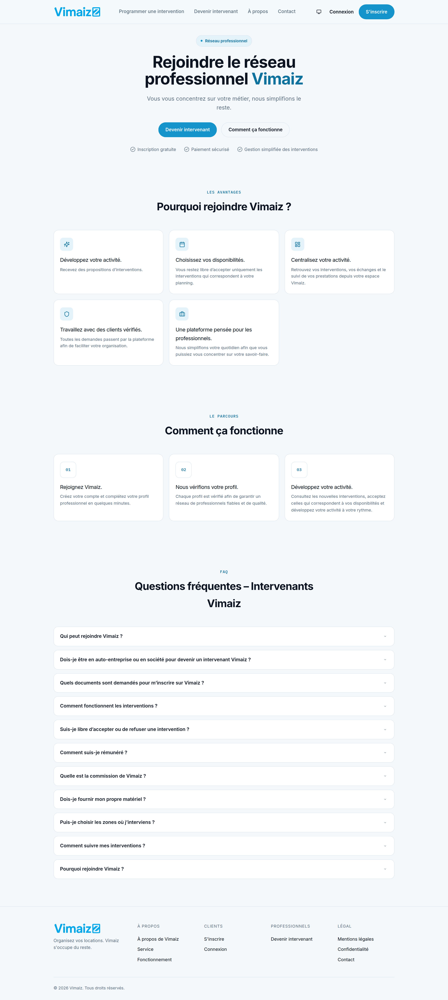
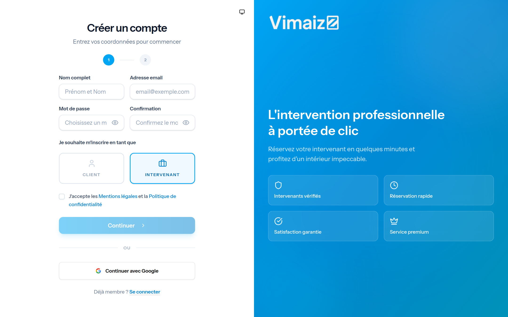
Ces informations servent à vous proposer des interventions adaptées.
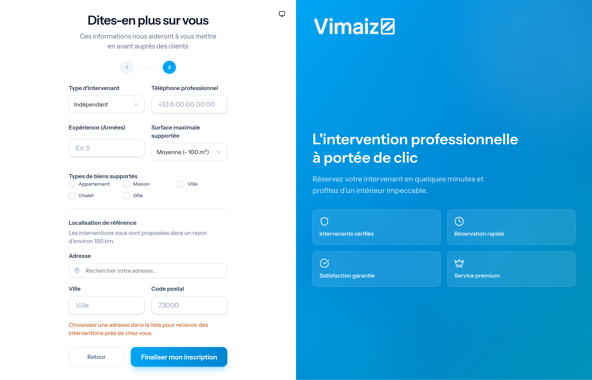
Sans adresse sélectionnée dans la liste, votre position GPS n’est pas enregistrée et vous ne recevrez pas d’interventions près de chez vous. Cliquez ensuite sur Finaliser mon inscription.
Rendez-vous sur Connexion, saisissez votre e-mail et votre mot de passe, puis cliquez sur Se connecter. Cochez « Se souvenir de moi » si vous utilisez un appareil personnel. La connexion Google est également disponible.
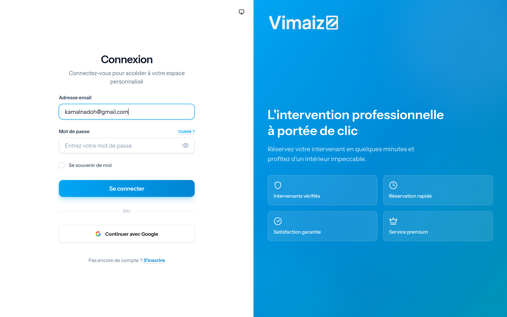
Mot de passe oublié ? Cliquez sur Oublié ?, indiquez votre e-mail puis Envoyer le lien de réinitialisation.
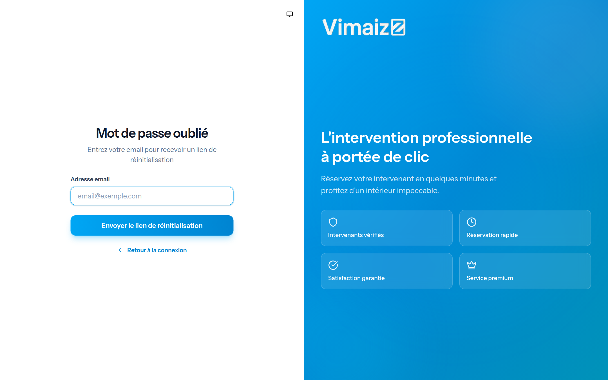
Après connexion, vous arrivez sur l’Espace pro. Le menu de gauche regroupe tout le parcours : interventions, documents, clause RCP, portefeuille, avis, retours clients, messages et profil.
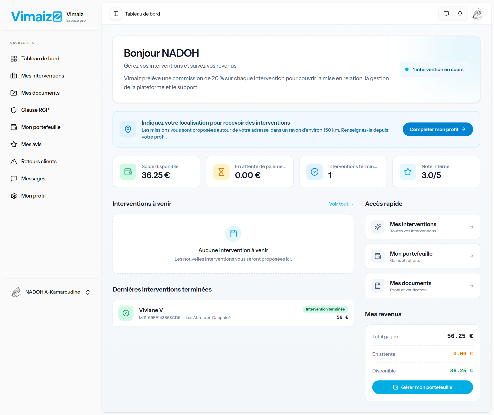
Vous y voyez notamment :
Si le bandeau « Indiquez votre localisation » apparaît, cliquez sur Compléter mon profil avant d’attendre des missions. Tant que vos documents ne sont pas validés, un bandeau orange « Finalisez vos documents » s’affiche aussi.
Menu Mon profil. Ajoutez une photo (JPG ou PNG, 2 Mo max), votre prénom, nom, e-mail, téléphone, puis surtout votre localisation de référence. Enregistrez.
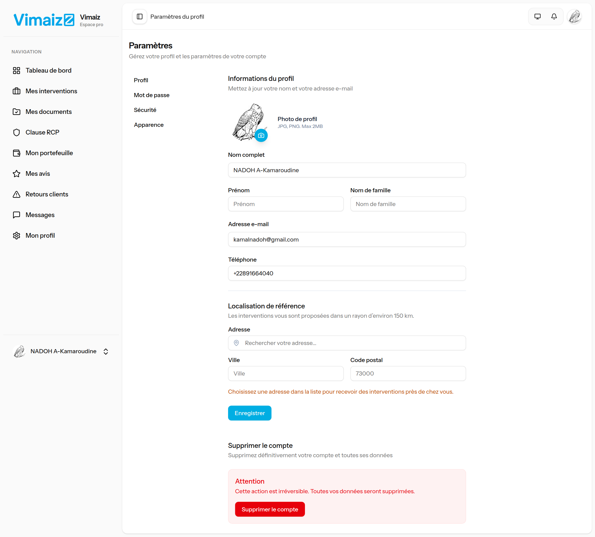
Les onglets Mot de passe, Sécurité et Apparence permettent de changer le mot de passe, d’activer la double authentification et de choisir le thème de l’interface.
Menu Mes documents. Téléchargez chaque justificatif (JPEG, PNG ou PDF, 5 Mo max), puis cliquez sur Soumettre pour vérification lorsque tous les documents obligatoires sont en place. L’équipe Vimaiz valide ensuite votre profil.
| Document | Obligatoire | Détail |
|---|---|---|
| Pièce d’identité | Oui | CNI ou passeport en cours de validité |
| Justificatif de domicile | Oui | Facture de moins de 3 mois |
| Extrait KBIS ou INSEE | Oui | Atteste de votre SIRET |
| Permis de conduire | Non | Recto-verso, optionnel |
| Attestation RC Pro | Recommandé | Obligatoire sous 3 mois |
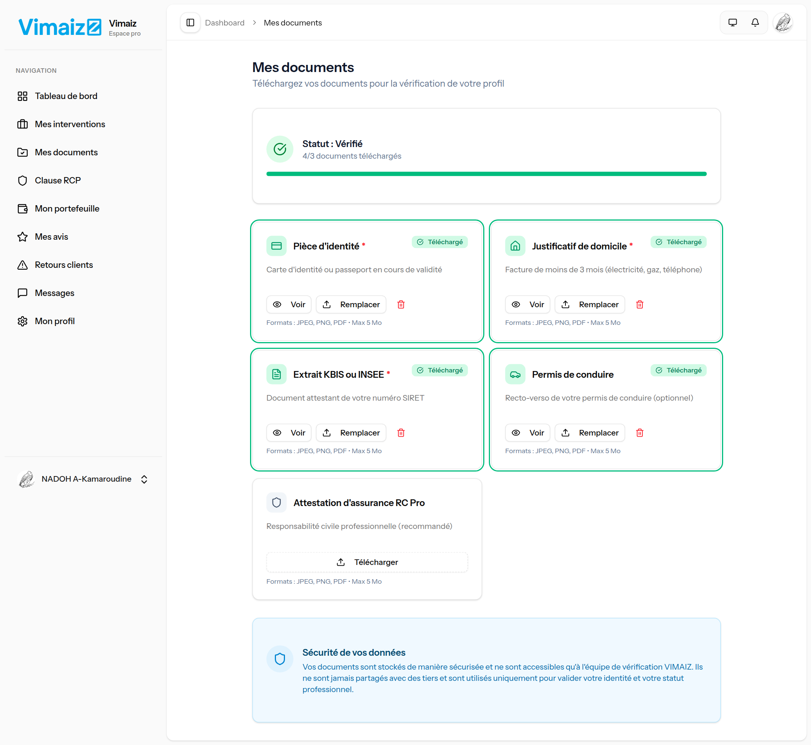
Vous êtes notifié par e-mail et dans l’espace Notifications lorsque les documents sont validés : « Vous pouvez maintenant recevoir des interventions. » En cas de rejet, la raison s’affiche sur cette page : corrigez le fichier et renvoyez.
Menu Clause RCP. Lisez le texte, cochez « Je reconnais avoir pris connaissance de cette clause… », puis Valider et continuer.
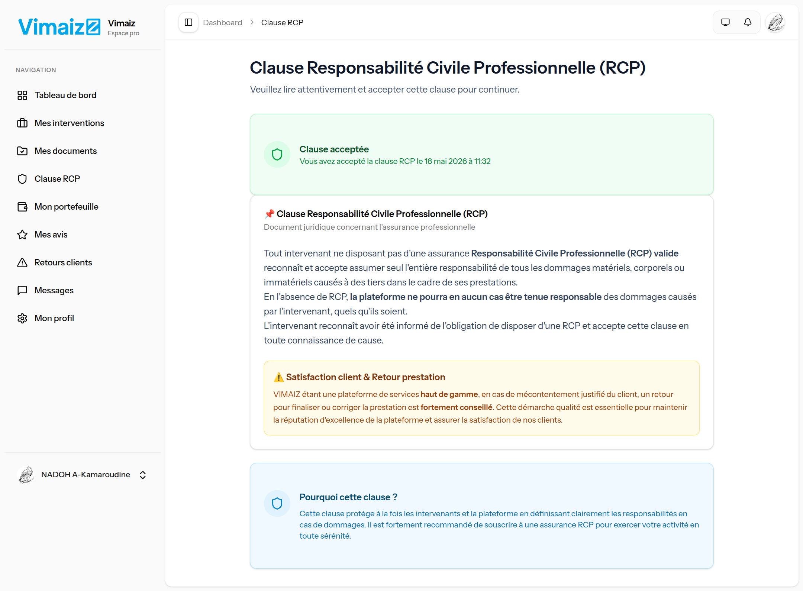
Sans assurance RCP valide, vous assumez seul les dommages causés pendant vos prestations. La plateforme n’en est pas responsable. Un retour sur site est fortement conseillé si un client est mécontent à juste titre.
Dès qu’une mission correspond à votre zone, vous êtes notifié (« Une intervention vous est proposée »). Elle apparaît :
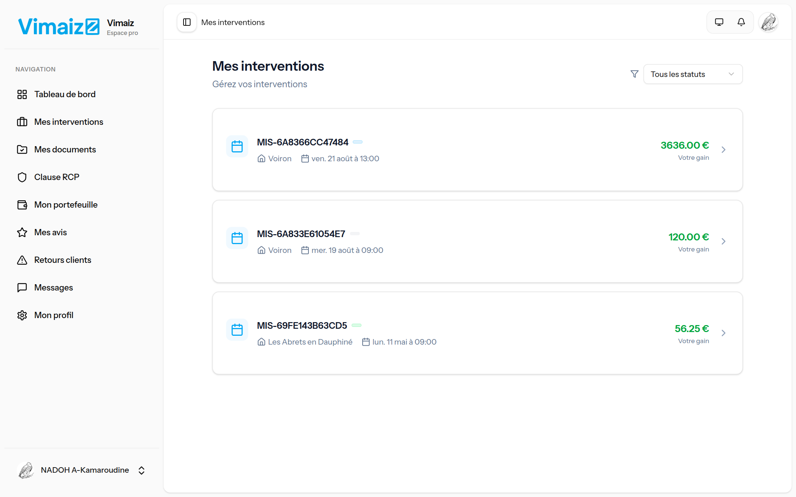
Sur une proposition, deux actions s’affichent :
Le premier intervenant qui accepte réserve la mission. Relisez le gain, la date, la ville et le détail du bien avant de confirmer.
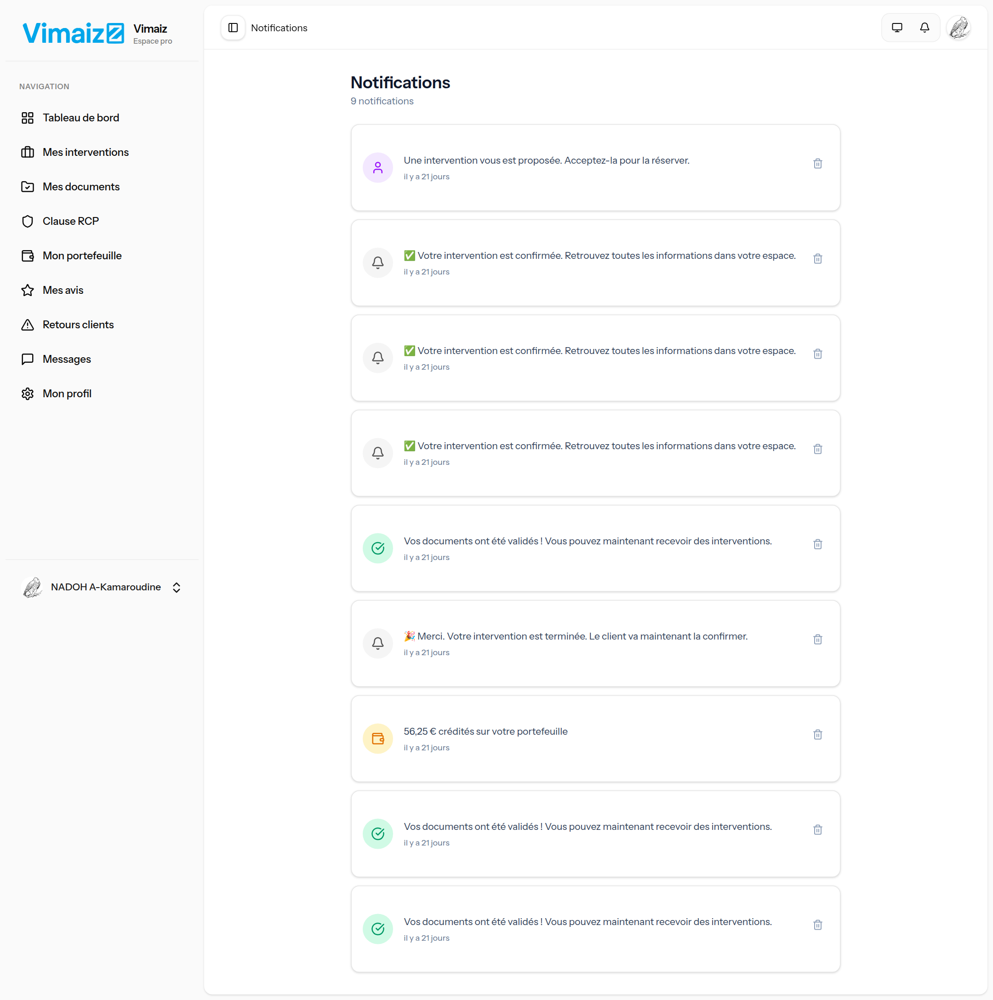
Ouvrez la mission pour retrouver l’adresse, les caractéristiques du bien, le code d’accès, le Wi-Fi, les consignes poubelles, la carte et le client. Un bouton Conversation permet d’écrire au propriétaire. Google Maps et Waze sont proposés pour l’itinéraire.
Placez-vous devant le bien, autorisez la localisation, puis cliquez sur Démarrer l’intervention. Vimaiz vérifie que vous êtes au bon endroit. Tant que l’intervention n’est pas démarrée, vous pouvez encore la décliner si un empêchement survient.
Cochez la checklist du bien (salon, cuisine, salles d’eau, chambres, terrasse, consommables, vérifications). Le compteur « Checklist : X / Y » et le temps passé s’affichent.
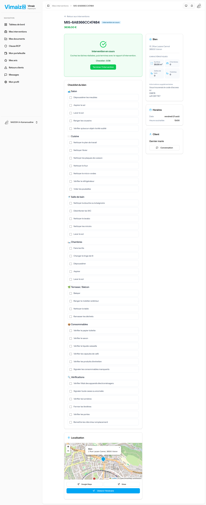
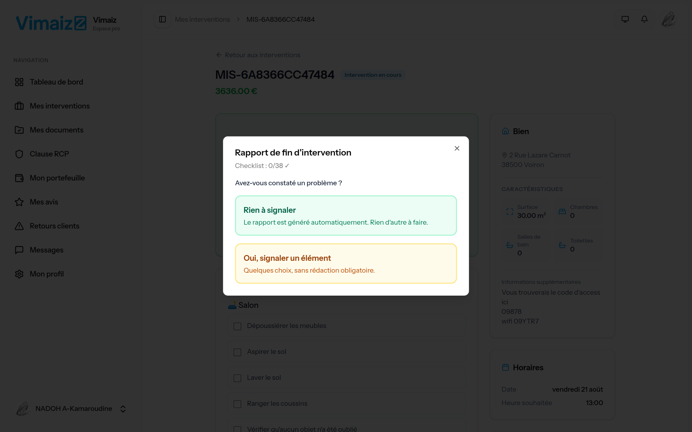
Une fois terminée, le statut passe à Intervention terminée. Vous pouvez télécharger la facture. Le client peut ensuite laisser un avis.
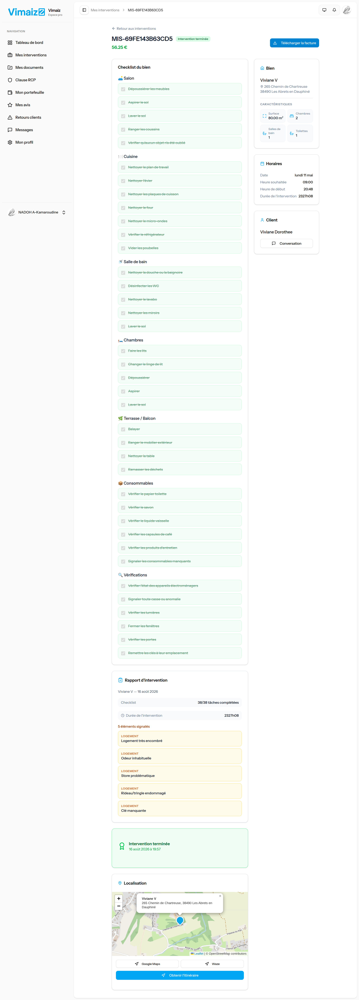
À la clôture de l’intervention, votre gain est crédité sur le portefeuille (notification du type « 56,25 € crédités »). Menu Mon portefeuille.
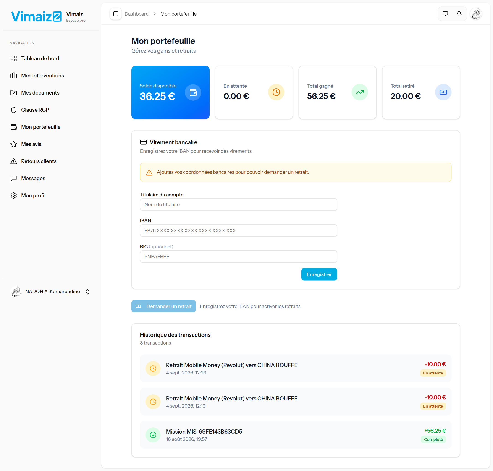
Sans IBAN, le bouton Demander un retrait reste inactif (« Enregistrez votre IBAN pour activer les retraits »).
Solde disponible = déjà crédité et retirable. En attente = paiement encore en cours de traitement. L’historique liste chaque crédit de mission et chaque retrait.
Menu Messages, ou bouton Conversation depuis une mission. Échangez uniquement via la plateforme pour garder la trace de l’intervention.
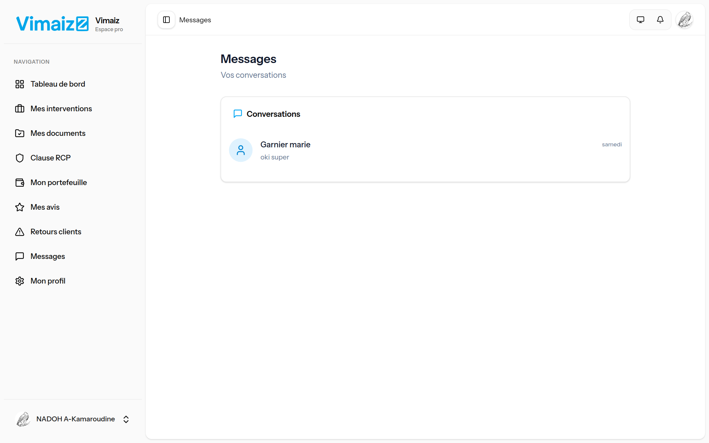
Menu Mes avis : note moyenne, nombre d’avis et commentaires après les missions terminées.
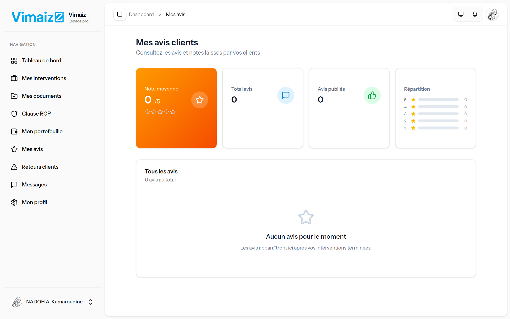
Si un client signale un mécontentement, la demande apparaît dans Retours clients. Démarrez le retour, corrigez la prestation, ajoutez vos notes puis marquez-le comme effectué. Le client valide ensuite.
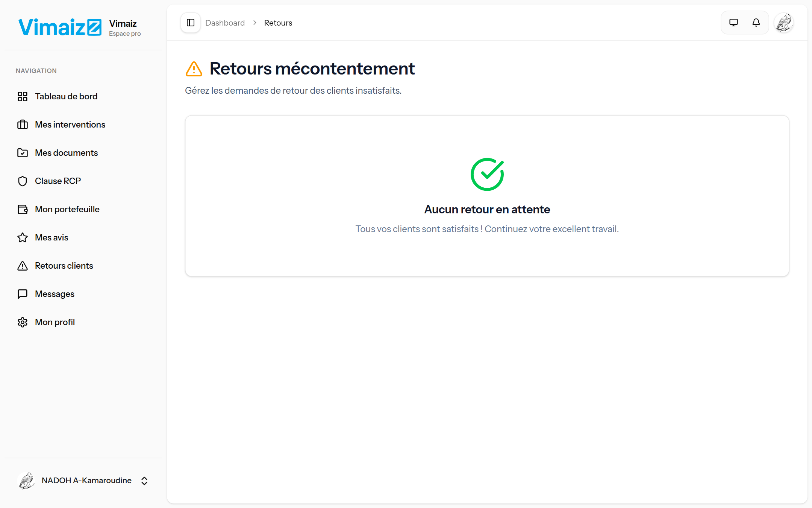
| Question | Réponse courte |
|---|---|
| Dois-je accepter toutes les missions ? | Non. Vous restez libre selon vos disponibilités. |
| Quel montant vais-je toucher ? | Celui affiché en vert (« Votre gain »), déjà net de commission 20 %. |
| Dois-je apporter le matériel ? | Oui, sauf mention contraire dans la fiche mission. |
| Pourquoi je ne reçois pas de missions ? | Vérifiez adresse GPS, documents « Vérifié » et clause RCP. |
| Comment retirer l’argent ? | IBAN enregistré, puis Demander un retrait (min. 1 €). |
Besoin d’aide ? Utilisez la page Contact du site Vimaiz ou répondez à un e-mail de notification. Conservez vos justificatifs à jour pour rester éligible aux nouvelles interventions.